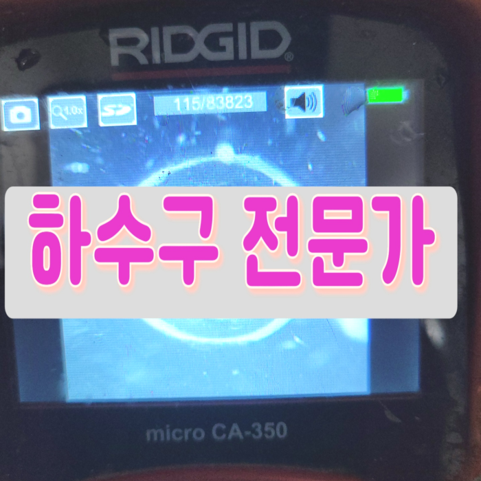
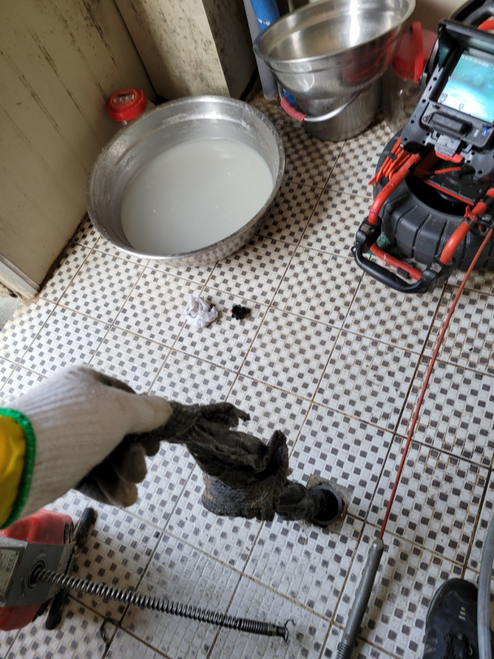
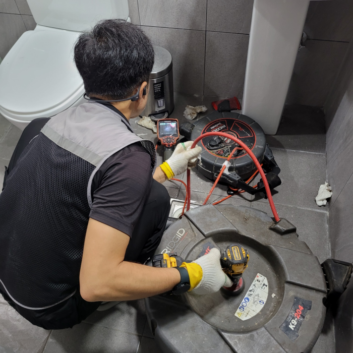
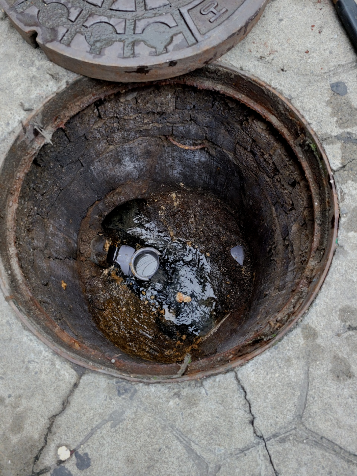
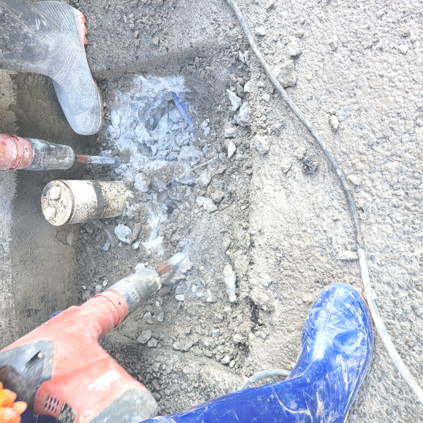
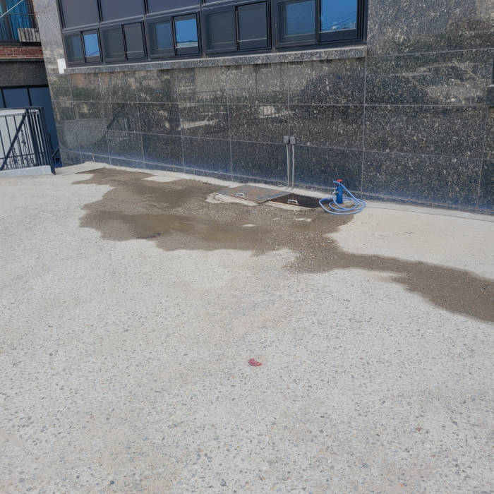
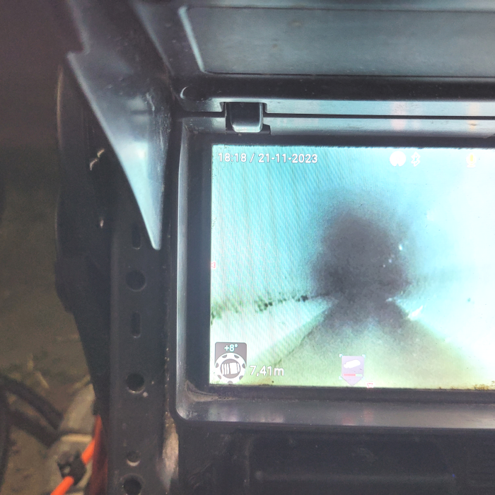

🏠 수원 인계동 씽크대막힘 우만동 주방배수구역류 뚫는곳 설비업체
수원 우만동 싱크대막힘 전문 시공 후기

📋 작업 개요
- 위치: 수원 우만동, 우만동, 수원
- 서비스 유형: 싱크대막힘, 변기막힘, 하수구막힘, 배관막힘, 역류해결, 뚫는업체, 배관청소
- 작업 일시: 2024. 3. 1. 23:36
- 업체명: 하수구수사대 (010-5615-2118)
🔍 문제 상황
어서오세요
설비전문업체 "하수구수사대"를 찾아주셔서 고맙습니다^^
여러분이 가정이나 직장에서 의식하지 못하고 다양한 설비시설 특히 하수도시설을 접하고 살아갑니다. 싱크대,변기,세면대 등 여러분이 삶 속에서 깨끗하고 간편하게 이용하고고 있는 필수 시설입니다.

🔎 원인 분석
💡 전문가 진단: 수원 인계동 씽크대막힘 우만동 주방배수구역류 뚫는곳 설비업체
배수 배관막힘은 많은 고객분들이 해결하는 과정을 물어보시느 상황이 많습니다만, 유지관리 방법에 대하여는 그다지 관심을 갖지 않으십니다.
수원 인계동 씽크대막힘 우만동 주방배수구역류 뚫는곳 설비업체
사실 저희와 같이 숙련된 기술자가 있는 배관업체에서도 현장에 방문하지 않고 금액을 결정할 수는 없습니다. 어느 정도의 비용이 정해져 있기는 하지만 배관막힘 현장의 상황이 나쁘면 더 높은 금액이 나올 수 있고 괜찮으면 더 적은 비용이 나올 수 있기 때문입니다.
출장을 나갈 때에는 배출구배관이 일반적이 않거나 유선상으로 확인이 어려울 시에 출장나가 확인해 드립니다. 현장에 직접 나가보고 진단을 거치고 나야 견적을 안내해 드릴 수 있기 때문에 그때 가서 이야기 들으시고 고민하실 수 있게 하고 있습니다.

🔧 작업 과정
내시경을 내려보니 배수막힘이 일어난 이유는 기름들이 가득 쌓이면서 물이 내려가기 어려운 통로 상태였는데요. 이러한 기름 슬러지들을 제거하기 위해서 배관에 플렉스 샤프트라는 장비를 사용해서 스케일링 작업을 진행하게 되었습니다.
사진으로 보시는 것처럼 배관으로 내시경을 넣어 확인해 보았더니 싱크대볼이 문제가 아니라 배출관에 기름 스케일이 쌓여서 슬러지가 생기는 바람에 물흐름을 방해하고 있었습니다.
이번 현장은 오염 상태가 굉장히 심각했으며 전체적으로 고착된 배수배관 슬러지가 굉장히 많았습니다. 일시적인 약품 사용이나 가벼운 석션으로는 처리가 안되는 상황이었기 때문에 전동 스프링기 장비를 이용하기로 했죠. 스프링 장비는 회수 오거가 회전하면서 작동하는 장비입니다.
배수관 일반적으로는 어찌해결해보려고합니다 급해지셔서 서둘러서뚫으실텐데요. 대한민국에서는 막혀버린배수관을 뚫어버리기위한 약품등등들을 살수가있어요.
그러기 위해서는 플렉스 샤프트라는 장비를 준비해야 합니다. 이 장비는 얇은 케이블이 노 커 체인이 달린 형태인데요, 배관 안으로 들어가서 이물질이 자리한 곳에 직접적으로 회전력을 이용해 잘게 분쇄하는 작업을 합니다.


✅ 작업 완료
배출구 배관 속에서 나오는 이물질의 양과 종류는 현장마다 상황마다 다르며, 그래서 사용하는 배출구장비도 작업하는 순서도 다를 수 있습니다. 서울 전 지역 하수구 배관 청소라면 어디든 달려가서 무리하지 않게 문제를 해결해드리고 있으니 언제든 연락 주시기 바랍니다.
#하수구막힘 #하수구뚫음 #하수구역류 #씽크대막힘 #싱크대역류 #오수관막힘 #하수구청소 #욕실하수구막힘 #변기막힘 #하수구뚫는비용 #싱크대수리 #화장실막힘




⚠️ 주방 싱크대 배관 막힘 예방 수칙
- ✅ 기름기가 묻은 식기나 프라이팬은 설거지 전 키친타올로 반드시 기름때를 닦아내세요.
- ✅ 주기적으로 싱크대 개수대에 뜨거운 물을 가득 받아 한 번에 내려 배관 내부 기름을 씻어내세요.
- ✅ 배수구 거름망을 미세한 필터로 사용하시고 음식물 찌꺼기가 틈으로 새어 들지 않게 관리하세요.
- ✅ 베이킹소다와 식초를 뜨거운 물과 함께 일주일에 한 번씩 부어주면 배관 살균과 막힘 예방에 좋습니다.
💡 핵심 정리
- 확실한 장비 작업(내시경 점검 및 샤프트 스케일링)으로 원인을 뿌리 뽑습니다.
- 작업 후 1년 이내에 동일한 부위 재발 시 100% 무상 A/S 서비스를 보장합니다.
- 서울 · 경기 · 인천 전 지역에 24시간 언제든 긴급 출동할 수 있도록 항시 대기 중입니다.
❓ 자주 묻는 질문 (FAQ)
🚨 수원 우만동 싱크대막힘 문제로 고민이신가요?
정확한 원인 진단과 확실한 시공으로 재발 없는 해결을 약속드립니다.
24시간 긴급 출동 | 서울 · 경기 · 인천 전지역 | 1년 내 재발 시 무상 A/S